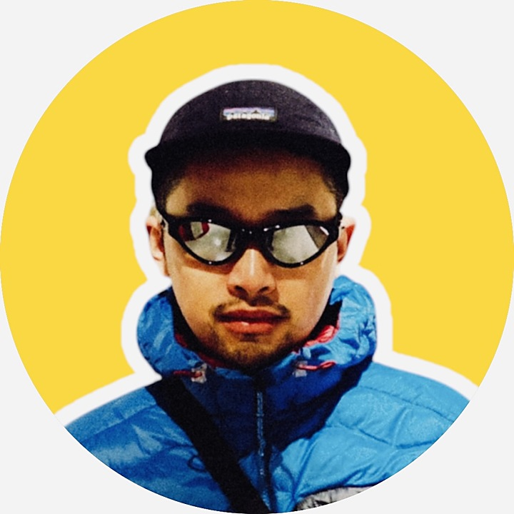
Social media that starts with the audience and ends with a number.
I have spent the past few years in recruitment and employer branding at IKEA — working out what the brand wants to say, who we need to reach, and what actually makes people stop and act. Alongside that I run my own channels across four platforms, produce AI-assisted content every week, and build the dashboards that show what worked. This page is what I would bring to the Social Media Partner role.
Four habits that shape everything I make — whether it is an employer-brand campaign or a post on my own account.
Before I write anything I map who we need to reach, what they care about and where they already spend their attention. Content that ignores the audience is just noise with good production.
The same idea behaves differently as a Reel, a carousel, a still or a long post. I test the format against the idea and the platform, not the other way around.
Reach, engagement and applications are three different goals. I set the measure before publishing so we can honestly say afterwards whether it worked and why.
Every campaign ends with a short read-out: what performed, what surprised us, what we would change. That is how a channel gets better instead of just busier.
Turning the employer promise into content and campaigns that candidates actually respond to — and into numbers we can act on.
Employer Branding · Talent Acquisition — audience, content and recruitment data
I worked on the candidate side of employer branding: understanding who IKEA needs to attract, what they care about, and how the employer promise should be expressed so it lands with the right people.
My focus was the full chain — from a defined audience and messaging, through the content itself, to the recruitment data that tells us whether it worked.
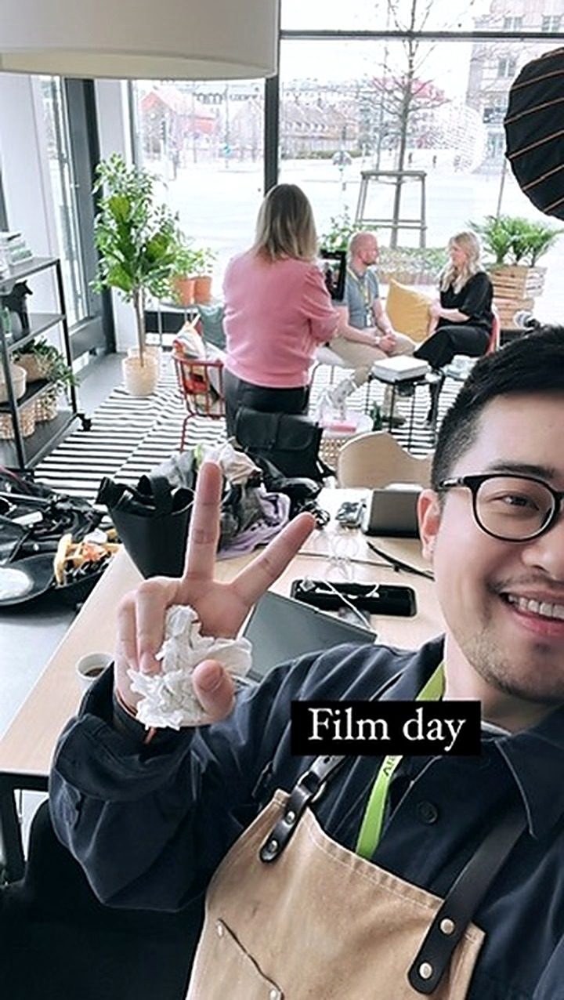
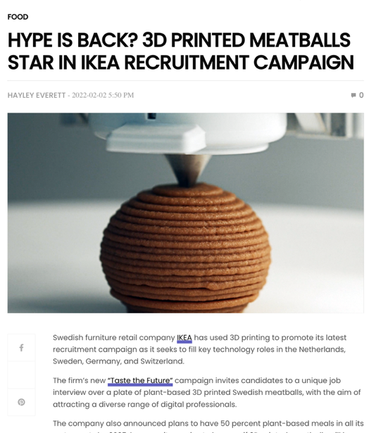
Building an employee-life channel from the ground up: instead of advertising jobs, show what the everyday actually feels like.
Content creator & planner · Employer branding · Tone of voice
As a fast-growing scale-up, Truecaller had to compete for talent against companies with much louder employer brands. We could not buy that attention — so we showed life instead.
The channel was built around real people and real moments: what it feels like to work here, what the culture and values look like in practice, and why someone should care about joining. My role covered the channel from concept to published post.
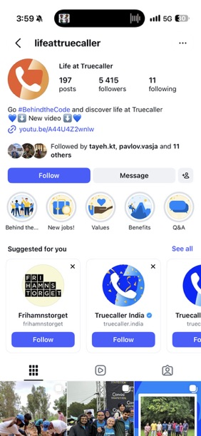
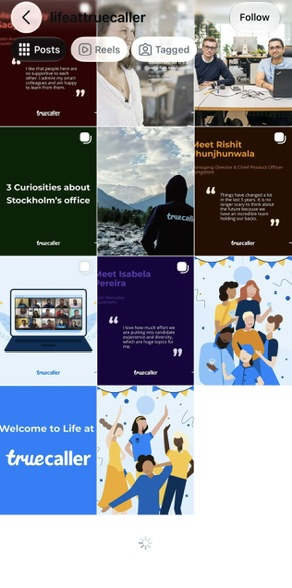
Outside work I use my own channels as a test kitchen — different audiences, different languages, different formats. Everything I learn there goes back into the job.
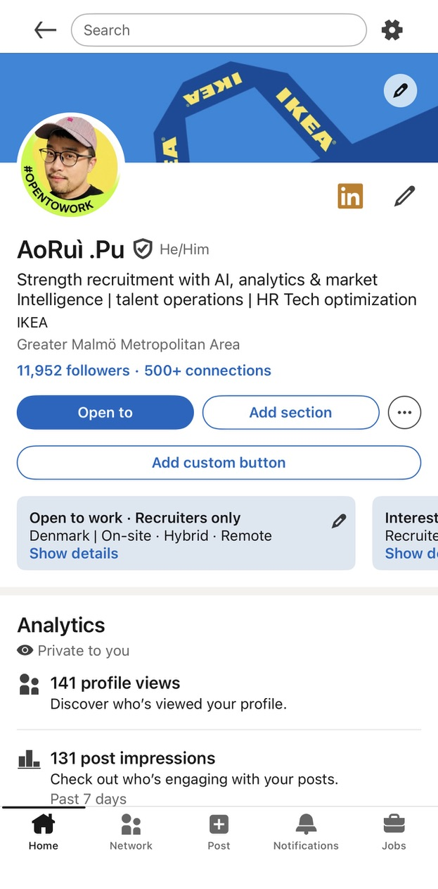
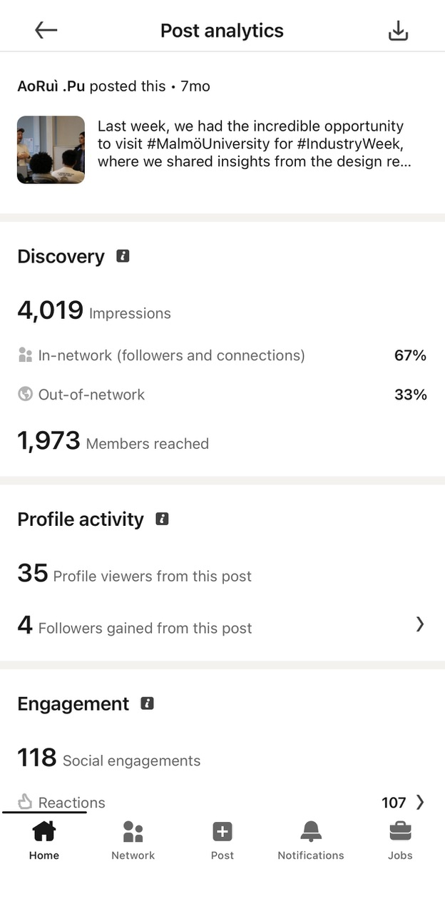
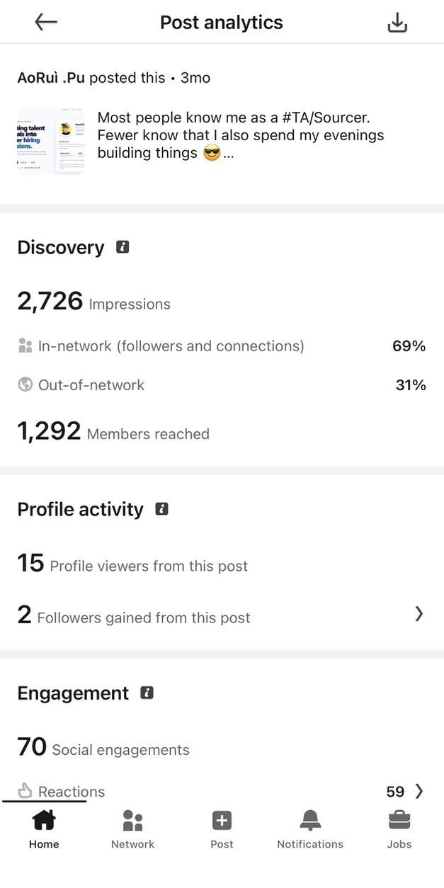
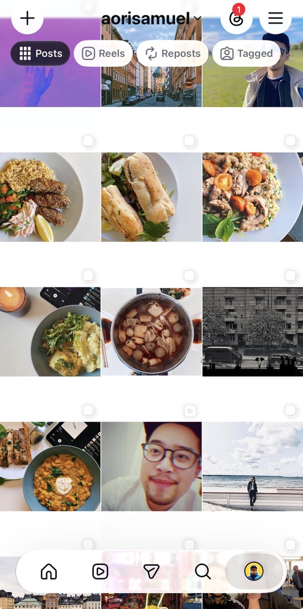
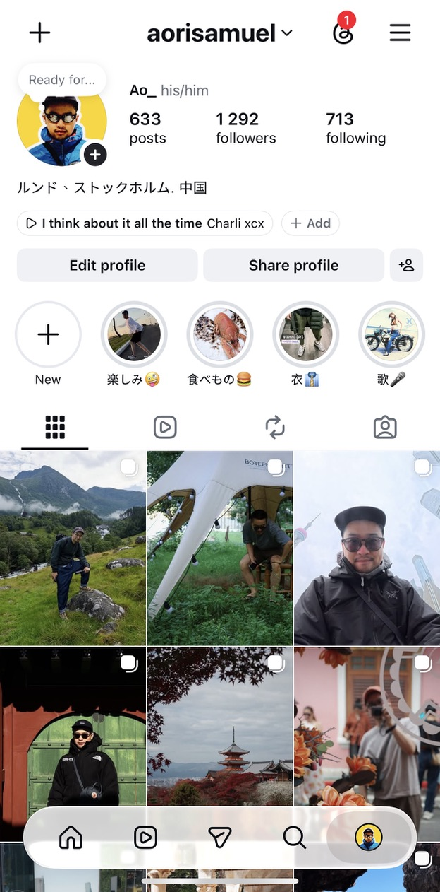
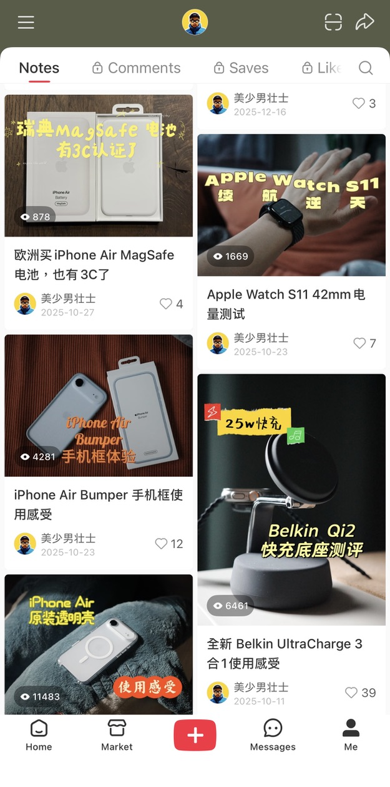
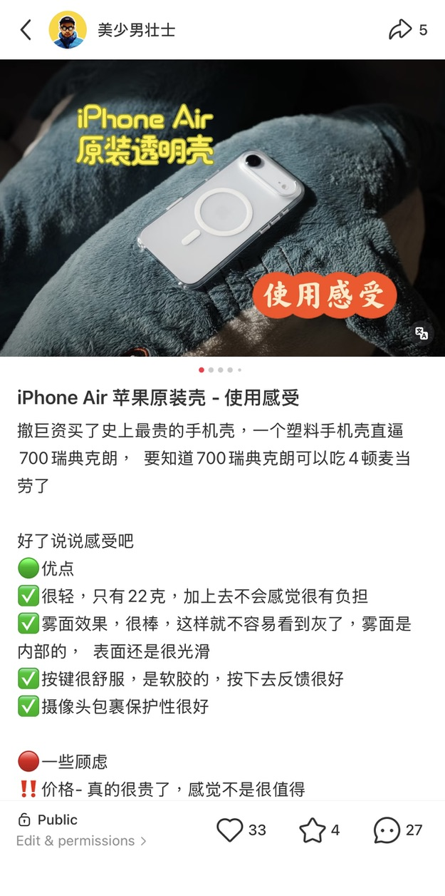
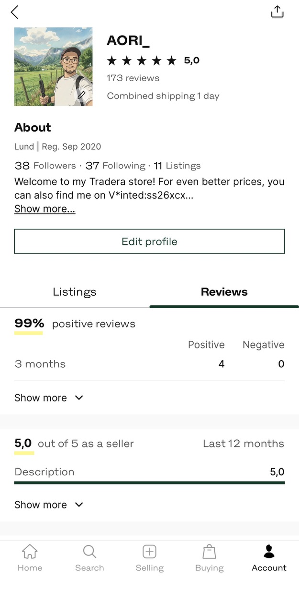
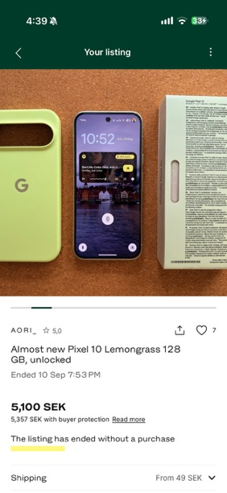
It starts as an idea in my head — a lone figure in a desert with something enormous overhead, a body breaking apart into light, a person at dusk standing in grass that glows. No camera, no crew, no location, no budget. I write the scene, direct the model, keep only what matches what I had imagined — then cut it to sound and publish it. That is what matters for employer branding: the idea stays human, AI removes the production limit.
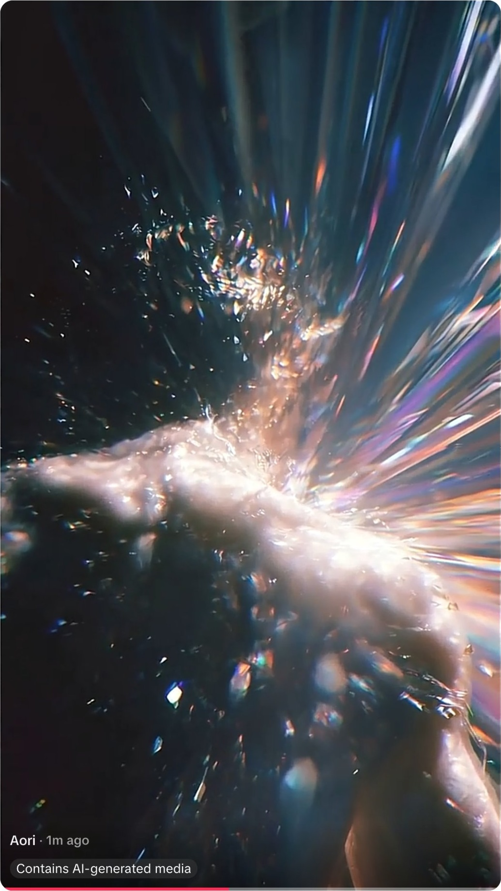
Stills prove the image. Film proves the direction — pacing, sound and cut are where an idea either lands or falls apart. This one was written, prompted, edited and published end to end on my phone.
The idea in my head, before any tool touches it.
I write the scene: subject, light, camera, mood.
The model renders video and stills from my concept.
Keep the frames that match the intention, re-prompt the rest.
One idea reshaped into five formats and three languages.
I create videos and images from my own concepts using generative models — turning a written idea into something publishable the same day, without a production budget.
Copy variants, captions, alt text, thumbnails and translations across Swedish, English and Chinese — the repetitive work that normally slows a channel down.
Where AI genuinely helps an employer brand: faster concept testing, localisation for international talent pools, and making niche roles visible without a photo shoot.
AI does not write the employer promise, it does not speak in a colleague's voice, and it never publishes unverified claims about the workplace. It accelerates production; authenticity and accuracy stay human. That balance is exactly what an employer brand has to protect.
I build the reporting layer myself. If a channel cannot show what it delivered, it cannot defend its next budget — or improve.
Built and maintained by me · SQL · Power BI · AI-assisted analysis
I built a recruitment analytics dashboard that brings hiring volume, pipeline duration and departmental demand into one view — the layer most social and employer-brand activity is usually missing.
It answers the questions that connect communication to hiring: where does demand come from, how long does a pipeline actually take, which stages are the bottleneck, and which messages help a role fill faster.
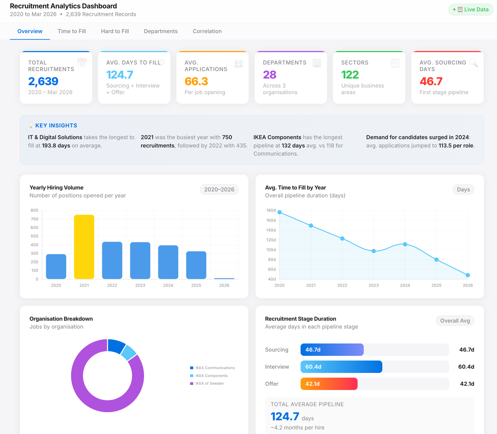
Four things I would walk in with on day one.
I understand how to create content for different audiences and social formats — and how different the same message has to be on LinkedIn, Reels or Rednote.
Several years of IKEA employer-branding experience and a solid understanding of the employer promise — what it means, and what it must never become.
I use recruitment data and audience insight to see what works, what does not, and what to do differently — then report it in a way people act on.
I experiment with AI-generated content weekly and think about where it genuinely fits employer branding and social — including where it does not belong.
Audit the channels and the content calendar, talk to the teams closest to the audience, and map what is already working before changing anything.
Build a content plan tied to the employer promise and the hiring priorities, with formats chosen deliberately and measures agreed up front.
Publish, measure and report — and use that first read-out to show what moved, what to scale, and what to stop.